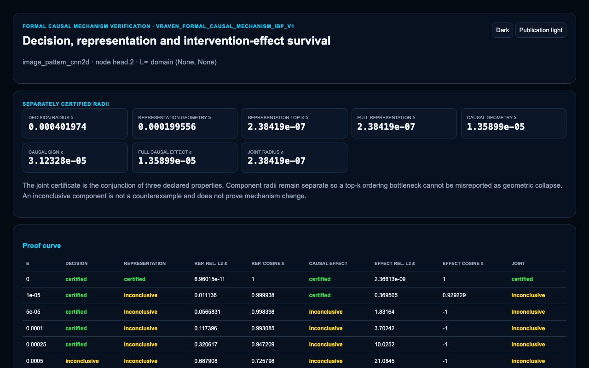

Reverse · 4 of 12
Formal Causal-Mechanism Certificate
Which recovered causal statements can be certified under the chosen intervention model?


What it shows
A formal record of the mechanism claims that passed verification.
Claim boundary
The certificate does not validate causal claims outside the encoded intervention assumptions.
Run this with the installed CLI
Point VRAVEN at a validated model bundle. This produces one focused HTML report and works after a normal PyPI installation.
vraven analyse ./my-model \
--task explain \
--preset standard \
--format html \
--output vraven-report.htmlStart with the model-folder guide if your bundle is not prepared yet. The larger documentation fixture is a contributor workflow described in Develop from source.
Generate this view
FormalCausalMechanismVerifier(model).certify(input_tensor, target=target).write_html(output_path)InputModel bundle, one reference input, selected target
Display mode
publication_lightEvidence levelFormal — within stated verifier assumptions
Machine output
reverse/formal_causal_mechanism_certificate.htmlRelated APIvraven.FormalCausalMechanismVerifier
Fixture
image_pattern_cnn2dHow to read the result
- Start with the title and target metadata in the generated report.
- Read the strongest structures first, then inspect weaker or opposing evidence.
- Check the stated evidence level and status before treating a relationship as causal or formal.
- Retain the trace, model version, preprocessing, and VRAVEN version with any published claim.
Reproducibility noteThe screenshot is public documentation evidence. The source run remains local-first; raw provenance files are not published because they can contain machine paths.